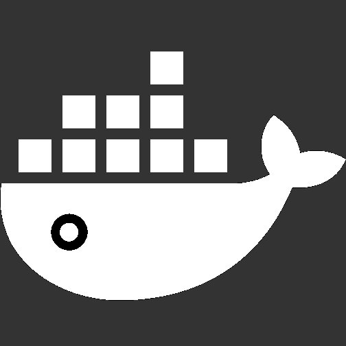

About Me
Hello! I’m Bill, a fourth-year Engineering Science student at the University of Toronto, majoring in Machine Learning and Artificial Intelligence. I am enthusiastic about using software, big data, machine learning, and the engineering approach to solve challenging problems, and helping to improve people's lives through technology.
From May 2019 to August 2020, I completed my professional experience year (PEY) co-op at Nuralogix as a Data Science Software Developer, where my work is centered around developing a Python API client for simple access of the DeepAffex (DFX) cloud service. I am also doing significant work in data science, such as building a Jenkins pipeline to standarize data pre-processing, and implementing machine learning and numerical models. In addition, I am working on numerous internal software and web tools.
In my spare time, I am involved in numerous extracurricular activities. I actively attend technical meetups and participate in hackathons. I also like to workout, play sports, travel, photograph weather and nature, and mentor younger peers.
I am currently open to full-time opportunities starting in summer 2021 in software
engineering,
data engineering, and data science. You can reach me by
email or LinkedIn.
Skills Summary
Programming |
Other Technologies |
Engineering & Leadership |
|---|---|---|
|
Python
|
SQL / Databases
|
Engineering Design Process |
|
Java
|
Amazon Web Services
|
Agile Methodology |
|
|
 Google Cloud
Google Cloud |
Software Development Cycle |
|
|
Linux
|
DevOps |
|
Node.js
|
React.js
|
Event Organization |
|
JavaScript
|
|
Teamwork |
|
HTML
|
|
Project Management |
|
CSS
|
|
Public Speaking |
|
|

Docker
|
Mentoring |